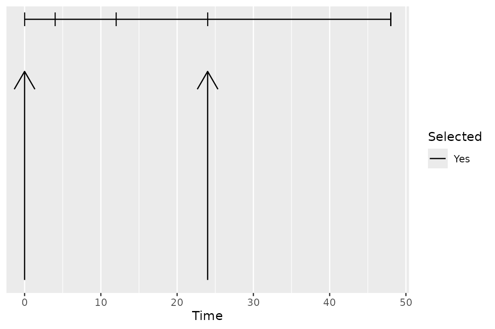
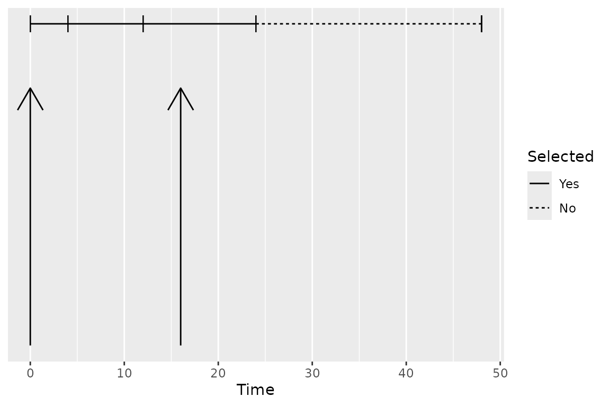

Selection of Calculation Intervals
Bill Denney
Source:vignettes/v03-selection-of-calculation-intervals.Rmd
v03-selection-of-calculation-intervals.RmdIntroduction
PKNCA considers two types of data grouping within data sets: the group and the interval. A group typically identifies a single subject given a single intervention type (a “treatment”) with a single analyte. An interval subsets a group by times within the group, and primary noncompartmental analysis (NCA) calculations are performed within an interval.
As a concrete example, consider the figure below shows the concentration-time profile of a study subject in a multiple-dose study. The group is all points in the figure, and the interval for the last day (144 to 168 hr) is the area with blue shading.
## Formula for concentration:
## conc ~ time | treatment + ID
## Data are dense PK.
## With 1 subjects defined in the 'ID' column.
## Nominal time column is not specified.
##
## First 6 rows of concentration data:
## study treatment ID time conc analyte exclude
## Study 1 Trt 1 1 0 0.0000000 Analyte 1 <NA>
## Study 1 Trt 1 1 1 0.6140526 Analyte 1 <NA>
## Study 1 Trt 1 1 2 0.8100022 Analyte 1 <NA>
## Study 1 Trt 1 1 4 0.8425422 Analyte 1 <NA>
## Study 1 Trt 1 1 6 0.7771994 Analyte 1 <NA>
## Study 1 Trt 1 1 8 0.7052469 Analyte 1 <NA>
# Plot the concentration-time data and the interval
ggplot(d_conc_multi, aes(x=time, y=conc)) +
geom_ribbon(data=d_conc_multi[d_conc_multi$time >= 144,],
aes(ymax=conc, ymin=0),
fill="skyblue") +
geom_point() + geom_line() +
scale_x_continuous(breaks=seq(0, 168, by=12)) +
scale_y_continuous(limits=c(0, NA)) +
labs(x="Time Since First Dose (hr)",
y="Concentration\n(arbitrary units)")
intervals_manual <- data.frame(start=144, end=168, auclast=TRUE)
knitr::kable(intervals_manual)| start | end | auclast |
|---|---|---|
| 144 | 168 | TRUE |
d_conc_multi_obj <- PKNCAconc(d_conc_multi, conc~time|treatment+ID)
PKNCAdata(d_conc_multi_obj, intervals=intervals_manual)## Formula for concentration:
## conc ~ time | treatment + ID
## Data are dense PK.
## With 1 subjects defined in the 'ID' column.
## Nominal time column is not specified.
##
## First 6 rows of concentration data:
## treatment ID conc time exclude
## Trt 1 1 0.0000000 0 <NA>
## Trt 1 1 0.6140526 1 <NA>
## Trt 1 1 0.8100022 2 <NA>
## Trt 1 1 0.8425422 4 <NA>
## Trt 1 1 0.7771994 6 <NA>
## Trt 1 1 0.7052469 8 <NA>
## No dosing information.
##
## With 1 rows of interval specifications.
## With imputation: NA
## No options are set differently than default.Group Matching
Group matching occurs by matching all overlapping column names
between the groups and the interval data.frame. (Note that grouping
columns cannot be the word start, end, or
share a name with an NCA parameter.)
Selecting the Subjects for an Interval
The groups for an interval prepare for summarization. Typically the groups will take a structure similar to the preferred summarization structure with groups nested in the logical method for summary. As an example, the group structure may be: study, treatment, day, analyte, and subject. The grouping names for an interval must be the same as or a subset of the grouping names used for the concentration data.
As the matching occurs with all available columns, the grouping columns names are only required to the level of specificity for the calculations desired. As an example, if you want AUCinf,obs in subjects who received single doses and AUClast on days 1 (0 to 24 hours) and 10 (216 to 240 hours) in subjects who received multiple doses, with treatment defined as “Drug 1 Single” or “Drug 1 Multiple”, the intervals could be defined as below.
intervals_manual <-
data.frame(
treatment=c("Drug 1 Single", "Drug 1 Multiple", "Drug 1 Multiple"),
start=c(0, 0, 216),
end=c(Inf, 24, 240),
aucinf.obs=c(TRUE, FALSE, FALSE),
auclast=c(FALSE, TRUE, TRUE)
)
knitr::kable(intervals_manual)| treatment | start | end | aucinf.obs | auclast |
|---|---|---|---|---|
| Drug 1 Single | 0 | Inf | TRUE | FALSE |
| Drug 1 Multiple | 0 | 24 | FALSE | TRUE |
| Drug 1 Multiple | 216 | 240 | FALSE | TRUE |
Intervals
Intervals are defined by data.frames with one row per
interval, zero or more columns to match the groups from the
PKNCAdata object, and one or more NCA parameters to
calculate. An interval may also have an impute column
specifying the data imputation method(s) to apply to the interval before
calculation (see the Data Imputation vignette for details). An interval
may have a tau column giving the dosing interval for the
multiple-dose parameters (see Multiple-Dose MRT and Vss below). Any
other columns named in the keep_interval_cols PKNCA option
are passed through from the intervals to the corresponding rows of the
results.
Selection of points within an interval occurs by choosing any point
at or after the start and at or before the
end.
To Infinity
The end of an interval may be infinity. An interval to infinity works
the same as any other interval in that points are selected by being at
or after the start and at or before the end of
the interval. Selecting Inf or any value at or after the
maximum time yields no difference in effect, but Inf is
simpler when scripting to ensure that all points are selected.
## Formula for concentration:
## conc ~ time | treatment + ID
## Data are dense PK.
## With 1 subjects defined in the 'ID' column.
## Nominal time column is not specified.
##
## First 6 rows of concentration data:
## study treatment ID time conc analyte exclude
## Study 1 Trt 1 1 0 0.0000000 Analyte 1 <NA>
## Study 1 Trt 1 1 1 0.6140526 Analyte 1 <NA>
## Study 1 Trt 1 1 2 0.8100022 Analyte 1 <NA>
## Study 1 Trt 1 1 4 0.8425422 Analyte 1 <NA>
## Study 1 Trt 1 1 6 0.7771994 Analyte 1 <NA>
## Study 1 Trt 1 1 8 0.7052469 Analyte 1 <NA>
# Use superposition to simulate multiple doses
ggplot(as.data.frame(d_conc)[as.data.frame(d_conc)$time <= 48,], aes(x=time, y=conc)) +
geom_ribbon(data=as.data.frame(d_conc),
aes(ymax=conc, ymin=0),
fill="skyblue") +
geom_point() + geom_line() +
scale_x_continuous(breaks=seq(0, 72, by=12)) +
scale_y_continuous(limits=c(0, NA)) +
labs(x="Time Since First Dose (hr)",
y="Concentration\n(arbitrary units)")
intervals_manual <-
data.frame(
start=0,
end=Inf,
auclast=TRUE,
aucinf.obs=TRUE
)
print(intervals_manual)## start end auclast aucinf.obs
## 1 0 Inf TRUE TRUE
my.data <- PKNCAdata(d_conc, intervals=intervals_manual)Multiple Intervals
More than one interval may be specified for the same subject or group of subjects by providing more than one row of interval specifications. In the figure below, the blue and green shaded regions indicate the first and second rows of the intervals, respectively.
## Formula for concentration:
## conc ~ time | treatment + ID
## Data are dense PK.
## With 1 subjects defined in the 'ID' column.
## Nominal time column is not specified.
##
## First 6 rows of concentration data:
## study treatment ID time conc analyte exclude
## Study 1 Trt 1 1 0 0.0000000 Analyte 1 <NA>
## Study 1 Trt 1 1 1 0.6140526 Analyte 1 <NA>
## Study 1 Trt 1 1 2 0.8100022 Analyte 1 <NA>
## Study 1 Trt 1 1 4 0.8425422 Analyte 1 <NA>
## Study 1 Trt 1 1 6 0.7771994 Analyte 1 <NA>
## Study 1 Trt 1 1 8 0.7052469 Analyte 1 <NA>
# Plot the concentration-time data and the interval
ggplot(d_conc_multi, aes(x=time, y=conc)) +
geom_ribbon(data=d_conc_multi[d_conc_multi$time <= 24,],
aes(ymax=conc, ymin=0),
fill="skyblue") +
geom_ribbon(data=d_conc_multi[d_conc_multi$time >= 144,],
aes(ymax=conc, ymin=0),
fill="lightgreen") +
geom_point() + geom_line() +
scale_x_continuous(breaks=seq(0, 168, by=12)) +
scale_y_continuous(limits=c(0, NA)) +
labs(x="Time Since First Dose (hr)",
y="Concentration\n(arbitrary units)")
intervals_manual <-
data.frame(
start=c(0, 144),
end=c(24, 168),
auclast=TRUE
)
knitr::kable(intervals_manual)| start | end | auclast |
|---|---|---|
| 0 | 24 | TRUE |
| 144 | 168 | TRUE |
Overlapping Intervals and Different Calculations by Interval
In some scenarios, multiple intervals may be needed where some intervals overlap. There is no issue with an interval specification that has two rows with overlapping times; the rows are considered separately. In the example below, the 0-24 interval is shared between both the first and second (shaded blue-green).
The example of overlapping intervals also illustrates that different
calculations can be performed in different intervals. In this case,
auclast is calculated in both intervals while
aucinf.obs is only calculated in the 0-Inf interval.
## Formula for concentration:
## conc ~ time | treatment + ID
## Data are dense PK.
## With 1 subjects defined in the 'ID' column.
## Nominal time column is not specified.
##
## First 6 rows of concentration data:
## study treatment ID time conc analyte exclude
## Study 1 Trt 1 1 0 0.0000000 Analyte 1 <NA>
## Study 1 Trt 1 1 1 0.6140526 Analyte 1 <NA>
## Study 1 Trt 1 1 2 0.8100022 Analyte 1 <NA>
## Study 1 Trt 1 1 4 0.8425422 Analyte 1 <NA>
## Study 1 Trt 1 1 6 0.7771994 Analyte 1 <NA>
## Study 1 Trt 1 1 8 0.7052469 Analyte 1 <NA>
# Use superposition to simulate multiple doses
ggplot(as.data.frame(d_conc), aes(x=time, y=conc)) +
geom_ribbon(data=as.data.frame(d_conc),
aes(ymax=conc, ymin=0),
fill="lightgreen",
alpha=0.5) +
geom_ribbon(data=as.data.frame(d_conc)[as.data.frame(d_conc)$time <= 24,],
aes(ymax=conc, ymin=0),
fill="skyblue",
alpha=0.5) +
geom_point() + geom_line() +
scale_x_continuous(breaks=seq(0, 168, by=12)) +
scale_y_continuous(limits=c(0, NA)) +
labs(x="Time Since First Dose (hr)",
y="Concentration\n(arbitrary units)")
intervals_manual <-
data.frame(
start=0,
end=c(24, Inf),
auclast=TRUE,
aucinf.obs=c(FALSE, TRUE)
)
knitr::kable(intervals_manual)| start | end | auclast | aucinf.obs |
|---|---|---|---|
| 0 | 24 | TRUE | FALSE |
| 0 | Inf | TRUE | TRUE |
my.data <- PKNCAdata(d_conc, intervals=intervals_manual)Intervals with Duration
Some events have durations of times rather than instants in time
associated with them. Two typical examples of duration data in NCA are
intravenous infusions and urine or fecal sample collections. Inform
PKNCA of durations with the duration argument to the
PKNCAdose and PKNCAconc functions.
Duration data are selected for an interval by the event time, which
is the time of the start of the duration (for example, the start of a
urine collection). Like any other data point, a duration record is
selected when its start time is at or after the interval
start and at or before the interval end; the
end of the duration is not considered. A collection that starts within
the interval and ends after the interval end is therefore
selected, and it contributes its full amount to calculations within the
interval (the amount is not pro-rated to the portion of the duration
inside the interval). For the simplest interpretation of results, align
collection start and end times with the interval boundaries.
The figures below show which durations are selected for two
intervals. The vertical arrows indicate the interval start
and end, and each horizontal segment is a duration (for
example, a urine collection) with tick marks at the collection
boundaries. In the first figure, the interval is from 0 to 24, and all
four durations are selected, including the duration from 24 to 48
because its start time is exactly at the interval end. In
the second figure, the interval is from 0 to 16: the duration from 12 to
24 is selected because its start time is within the interval, even
though the collection extends past the interval end (and
its full amount contributes to the interval), while the duration from 24
to 48 is not selected.


Multiple-Dose MRT and Vss
The multiple-dose parameters mrt.md.obs,
mrt.md.pred, vss.md.obs, and
vss.md.pred measure MRT and Vss over a steady-state dosing
interval instead of over a single dose.
These are the parameters to use when PK are
nonlinear. When PK are linear, MRT and Vss can be measured from
a single dose, and the single-dose parameters (mrt.obs,
vss.obs, and similar) describe steady state as well. When
PK are nonlinear they do not: clearance and volume at steady state
differ from their values after the first dose, so MRT and Vss have to be
measured over a steady-state interval.
Taking mrt.last over a dosing interval is not a
substitute. AUMC divided by AUC over 0 to tau
leaves out the drug still in the body at the end of the interval and
underestimates MRT substantially. The multiple-dose parameters add the
tau*(AUCinf - AUCtau)/AUCtau term that accounts for it.
The dosing interval comes from a tau column in the
interval specification, and that column takes precedence whenever it is
given:
intervals_md <-
data.frame(
start=0, end=24,
tau=24,
mrt.md.obs=TRUE, vss.md.obs=TRUE
)When no tau column is given, tau is
detected from the dose times with find.tau(), which needs
at least two doses in the dosing data. A steady-state design that
records only the profiled dose has nothing that repeats, so it needs the
tau column. If tau can be neither given nor
detected, the parameters are NA with a warning rather than
silently falling back to the single-dose equation.
Intravenous Infusions
For an IV infusion, use mrt.ivmd.obs,
mrt.ivmd.pred, vss.ivmd.obs, and
vss.ivmd.pred instead. They subtract half of the infusion
duration, the same correction that mrt.iv.obs applies to
the single-dose MRT. Without it, MRT is high by half the infusion
duration and Vss is high by clearance times half the infusion
duration.
Parameters Available for Calculation in an Interval
The following parameters are available in an interval. For more information about the parameter, see the documentation for the function.
| Parameter Name | Formula | Formula Note | Unit Type | Parameter Description | Function for Calculation |
|---|---|---|---|---|---|
| adj_tobit_residual | unitless | Adjusted Tobit residual SD | See the parameter name half.life | ||
| adj.r.squared | unitless | Adjusted R-sq of half-life fit | See the parameter name half.life | ||
| ae | amount | Amount excreted (urine/feces) | pk.calc.ae | ||
| aucabove.predose.all | auc | AUC above predose, floor at 0 | pk.calc.aucabove | ||
| aucabove.trough.all | auc | AUC above trough, floor at 0 | pk.calc.aucabove | ||
| aucall | Trapezoidal rule (linear-up/log-down by default) | auc | AUClast plus triangle, 0 at BLQ | pk.calc.auc.all | |
| aucall.dn | auc_dosenorm | Dose normalized aucall | pk.calc.dn | ||
| aucinf.obs | auc | AUC start to inf, obs Clast extrap | pk.calc.auc.inf.obs | ||
| aucinf.obs.dn | auc_dosenorm | Dose normalized aucinf.obs | pk.calc.dn | ||
| aucinf.pred | auc | AUC start to inf, pred Clast extrap | pk.calc.auc.inf.pred | ||
| aucinf.pred.dn | auc_dosenorm | Dose normalized aucinf.pred | pk.calc.dn | ||
| aucint.all | Trapezoidal rule with interpolation at interval boundaries | auc | AUC from T1 to T2 (AUCall extrap) | pk.calc.aucint.all | |
| aucint.all.dose | Trapezoidal rule with interpolation at interval boundaries | auc | AUC T1 to T2, dose-aware (AUCall) | pk.calc.aucint.all | |
| aucint.inf.obs | Trapezoidal rule with interpolation at interval boundaries | auc | AUC from T1 to T2 (AUCinf,obs extrap) | pk.calc.aucint.inf.obs | |
| aucint.inf.obs.dose | Trapezoidal rule with interpolation at interval boundaries | auc | AUC T1 to T2, dose-aware (AUCinf,obs) | pk.calc.aucint.inf.obs | |
| aucint.inf.pred | Trapezoidal rule with interpolation at interval boundaries | auc | AUC from T1 to T2 (AUCinf,pred extrap) | pk.calc.aucint.inf.pred | |
| aucint.inf.pred.dose | Trapezoidal rule with interpolation at interval boundaries | auc | AUC T1 to T2, dose-aware (AUCinf,pred) | pk.calc.aucint.inf.pred | |
| aucint.last | Trapezoidal rule with interpolation at interval boundaries | auc | AUC from T1 to T2 (zero extrap) | pk.calc.aucint.last | |
| aucint.last.dose | Trapezoidal rule with interpolation at interval boundaries | auc | AUC T1 to T2, dose-aware (zero extrap) | pk.calc.aucint.last | |
| aucivall | auc | AUCall, IV back-extrap C0 | pk.calc.auciv | ||
| aucivinf.obs | auc | AUCinf.obs, IV back-extrap C0 | pk.calc.auciv | ||
| aucivinf.pred | auc | AUCinf.pred, IV back-extrap C0 | pk.calc.auciv | ||
| aucivint.all | auc | AUCint.all, IV back-extrap C0 | pk.calc.auciv | ||
| aucivint.last | auc | AUCint.last, IV back-extrap C0 | pk.calc.auciv | ||
| aucivlast | auc | AUClast, IV back-extrap C0 | pk.calc.auciv | ||
| aucivpbextall | % | Back-extrap %, IV, AUCall | pk.calc.auciv_pbext | ||
| aucivpbextinf.obs | % | Back-extrap %, IV, AUCinf.obs | pk.calc.auciv_pbext | ||
| aucivpbextinf.pred | % | Back-extrap %, IV, AUCinf.pred | pk.calc.auciv_pbext | ||
| aucivpbextint.all | % | Back-extrap %, IV, AUCint.all | pk.calc.auciv_pbext | ||
| aucivpbextint.last | % | Back-extrap %, IV, AUCint.last | pk.calc.auciv_pbext | ||
| aucivpbextlast | % | Back-extrap %, IV, AUClast | pk.calc.auciv_pbext | ||
| auclast | Trapezoidal rule (linear-up/log-down by default) | auc | AUC start to last conc above LOQ | pk.calc.auc.last | |
| auclast.dn | auc_dosenorm | Dose normalized auclast | pk.calc.dn | ||
| aucpext.obs | % | % AUCinf extrap after Tlast, obs | pk.calc.aucpext | ||
| aucpext.pred | % | % AUCinf extrap after Tlast, pred | pk.calc.aucpext | ||
| aumcall | Trapezoidal rule (linear-up/log-down by default) | aumc | AUMClast plus triangle moment, 0 at BLQ | pk.calc.aumc.all | |
| aumcall.dn | aumc_dosenorm | Dose normalized aumcall | pk.calc.dn | ||
| aumcinf.obs | aumc | AUMC start to inf, obs Clast extrap | pk.calc.aumc.inf.obs | ||
| aumcinf.obs.dn | aumc_dosenorm | Dose normalized aumcinf.obs | pk.calc.dn | ||
| aumcinf.pred | aumc | AUMC start to inf, pred Clast extrap | pk.calc.aumc.inf.pred | ||
| aumcinf.pred.dn | aumc_dosenorm | Dose normalized aumcinf.pred | pk.calc.dn | ||
| aumcint.all | Trapezoidal rule with interpolation at interval boundaries | aumc | AUMC from T1 to T2 (AUMCall extrap) | pk.calc.aumcint.all | |
| aumcint.all.dose | Trapezoidal rule with interpolation at interval boundaries | aumc | AUMC T1 to T2, dose-aware (AUMCall) | pk.calc.aumcint.all | |
| aumcint.inf.obs | Trapezoidal rule with interpolation at interval boundaries | aumc | AUMC from T1 to T2 (AUMCinf,obs extrap) | pk.calc.aumcint.inf.obs | |
| aumcint.inf.obs.dose | Trapezoidal rule with interpolation at interval boundaries | aumc | AUMC T1 to T2, dose-aware (AUMCinf,obs) | pk.calc.aumcint.inf.obs | |
| aumcint.inf.pred | Trapezoidal rule with interpolation at interval boundaries | aumc | AUMC from T1 to T2 (AUMCinf,pred extrap) | pk.calc.aumcint.inf.pred | |
| aumcint.inf.pred.dose | Trapezoidal rule with interpolation at interval boundaries | aumc | AUMC T1 to T2, dose-aware (AUMCinf,pred) | pk.calc.aumcint.inf.pred | |
| aumcint.last | Trapezoidal rule with interpolation at interval boundaries | aumc | AUMC from T1 to T2 (zero extrap) | pk.calc.aumcint.last | |
| aumcint.last.dose | Trapezoidal rule with interpolation at interval boundaries | aumc | AUMC T1 to T2, dose-aware (zero extrap) | pk.calc.aumcint.last | |
| aumcivall | aumc | AUMCall, IV back-extrap C0 | pk.calc.aumciv | ||
| aumcivinf.obs | aumc | AUMCinf.obs, IV back-extrap C0 | pk.calc.aumciv | ||
| aumcivinf.pred | aumc | AUMCinf.pred, IV back-extrap C0 | pk.calc.aumciv | ||
| aumcivint.all | aumc | AUMCint.all, IV back-extrap C0 | pk.calc.aumciv | ||
| aumcivint.last | aumc | AUMCint.last, IV back-extrap C0 | pk.calc.aumciv | ||
| aumcivlast | aumc | AUMClast, IV back-extrap C0 | pk.calc.aumciv | ||
| aumclast | Trapezoidal rule (linear-up/log-down by default) | aumc | AUMC start to last conc above LOQ | pk.calc.aumc.last | |
| aumclast.dn | aumc_dosenorm | Dose normalized aumclast | pk.calc.dn | ||
| c0 | Methods are tried in order: c0, logslope, c1, cmin, set0; the formula shows c0 and logslope | conc | Initial conc after IV bolus | pk.calc.c0 | |
| cav | conc | Avg conc in interval (AUClast) | pk.calc.cav | ||
| cav.dn | conc_dosenorm | Dose normalized cav | pk.calc.dn | ||
| cav.int.all | conc | Avg conc in interval (AUCint.all) | pk.calc.cav | ||
| cav.int.inf.obs | conc | Avg conc in interval (AUCint.inf.obs) | pk.calc.cav | ||
| cav.int.inf.pred | conc | Avg conc in interval (AUCint.inf.pred) | pk.calc.cav | ||
| cav.int.last | conc | Avg conc in interval (AUCint.last) | pk.calc.cav | ||
| ceoi | conc | Concentration at the end of infusion | pk.calc.ceoi | ||
| cl.all | clearance | Clearance, AUCall | pk.calc.cl | ||
| cl.int.all | clearance | Clearance, AUCint.all | pk.calc.cl | ||
| cl.int.inf.obs | clearance | Clearance, AUCint.inf.obs | pk.calc.cl | ||
| cl.int.inf.pred | clearance | Clearance, AUCint.inf.pred | pk.calc.cl | ||
| cl.int.last | clearance | Clearance, AUCint.last | pk.calc.cl | ||
| cl.iv.all | clearance | IV clearance, AUCall | pk.calc.cl | ||
| cl.iv.last | clearance | IV clearance, AUClast | pk.calc.cl | ||
| cl.iv.obs | clearance | IV clearance, AUCinf.obs | pk.calc.cl | ||
| cl.iv.pred | clearance | IV clearance, AUCinf.pred | pk.calc.cl | ||
| cl.ivint.all | clearance | IV clearance, AUCint.all | pk.calc.cl | ||
| cl.ivint.last | clearance | IV clearance, AUCint.last | pk.calc.cl | ||
| cl.last | clearance | Clearance, AUClast | pk.calc.cl | ||
| cl.obs | clearance | Clearance, observed Clast | pk.calc.cl | ||
| cl.pred | clearance | Clearance, predicted Clast | pk.calc.cl | ||
| cl.sparse.last | clearance | Clearance, sparse AUClast | pk.calc.cl | ||
| clast.obs | conc | Last conc observed above LOQ | pk.calc.clast.obs | ||
| clast.obs.dn | conc_dosenorm | Dose normalized clast.obs | pk.calc.dn | ||
| clast.pred | conc | Predicted Clast from half-life | See the parameter name half.life | ||
| clast.pred.dn | conc_dosenorm | Dose normalized clast.pred | pk.calc.dn | ||
| clr.last | renal_clearance | Renal clearance, AUClast | pk.calc.clr | ||
| clr.last.dn | renal_clearance_dosenorm | Dose normalized clr.last | pk.calc.dn | ||
| clr.obs | renal_clearance | Renal clearance, AUCinf,obs | pk.calc.clr | ||
| clr.obs.dn | renal_clearance_dosenorm | Dose normalized clr.obs | pk.calc.dn | ||
| clr.pred | renal_clearance | Renal clearance, AUCinf,pred | pk.calc.clr | ||
| clr.pred.dn | renal_clearance_dosenorm | Dose normalized clr.pred | pk.calc.dn | ||
| cmax | conc | Maximum observed concentration | pk.calc.cmax | ||
| cmax.dn | conc_dosenorm | Dose normalized cmax | pk.calc.dn | ||
| cmin | conc | Minimum observed concentration | pk.calc.cmin | ||
| cmin.dn | conc_dosenorm | Dose normalized cmin | pk.calc.dn | ||
| count_conc | count | Count of non-missing conc | pk.calc.count_conc | ||
| count_conc_measured | count | Count of measured, non-BLQ conc | pk.calc.count_conc_measured | ||
| cstart | conc | The predose concentration | pk.calc.cstart | ||
| ctrough | conc | Trough (end of interval) conc | pk.calc.ctrough | ||
| ctrough.dn | conc_dosenorm | Dose normalized ctrough | pk.calc.dn | ||
| deg.fluc | % | Degree of fluctuation | pk.calc.deg.fluc | ||
| erint | Amount recovered during the interval divided by the interval duration | amount_time | Excretion rate from T1 to T2 | pk.calc.erint | |
| erlst | The last collection with a nonzero excretion rate, ordered by collection midpoint | amount_time | Last measurable excretion rate | pk.calc.erlst | |
| ermax | amount_time | Maximum excretion rate | pk.calc.ermax | ||
| ertlst | time | Midpoint time of last excr rate | pk.calc.ertlst | ||
| ertmax | time | Midpoint time of max excr rate | pk.calc.ertmax | ||
| f.int.all | fraction | Bioavailability from AUCint,all | pk.calc.f | ||
| f.int.last | fraction | Bioavailability from AUCint,last | pk.calc.f | ||
| f.int.obs | fraction | Bioavailability from AUCint,inf,obs | pk.calc.f | ||
| f.int.pred | fraction | Bioavailability from AUCint,inf,pred | pk.calc.f | ||
| f.last | fraction | Bioavailability from AUClast | pk.calc.f | ||
| f.obs | fraction | Bioavailability from AUCinf,obs | pk.calc.f | ||
| f.pred | fraction | Bioavailability from AUCinf,pred | pk.calc.f | ||
| fe | amount_dose | Fraction of dose excreted | pk.calc.fe | ||
| half.life | time | The (terminal) half-life | pk.calc.half.life | ||
| kel.all | inverse_time | Elim rate, MRTall | pk.calc.kel | ||
| kel.int.all | inverse_time | Elim rate, MRTint.all | pk.calc.kel | ||
| kel.int.inf.obs | inverse_time | Elim rate, MRTint.inf.obs | pk.calc.kel | ||
| kel.int.inf.pred | inverse_time | Elim rate, MRTint.inf.pred | pk.calc.kel | ||
| kel.int.last | inverse_time | Elim rate, MRTint.last | pk.calc.kel | ||
| kel.iv.all | inverse_time | Elim rate, IV MRTall | pk.calc.kel | ||
| kel.iv.last | inverse_time | Elim rate, IV MRTlast | pk.calc.kel | ||
| kel.iv.obs | inverse_time | Elim rate, IV MRTobs | pk.calc.kel | ||
| kel.iv.pred | inverse_time | Elim rate, IV MRTpred | pk.calc.kel | ||
| kel.ivint.all | inverse_time | Elim rate, IV MRTint.all | pk.calc.kel | ||
| kel.ivint.last | inverse_time | Elim rate, IV MRTint.last | pk.calc.kel | ||
| kel.last | inverse_time | Elim rate, MRT via AUClast | pk.calc.kel | ||
| kel.obs | inverse_time | Elim rate, MRT w/ obs Clast | pk.calc.kel | ||
| kel.pred | inverse_time | Elim rate, MRT w/ pred Clast | pk.calc.kel | ||
| kel.sparse.last | inverse_time | Elim rate, sparse MRTlast | pk.calc.kel | ||
| lambda.z | inverse_time | Terminal elim rate (lambda.z) | See the parameter name half.life | ||
| lambda.z.corrxy | unitless | Corr(time,log-conc) for lambda.z | See the parameter name half.life | ||
| lambda.z.n.points | $n_{\lambda_z} = \left| t_{\lambda_z} \right|$ | count | Number of points used, lambda.z | See the parameter name half.life | |
| lambda.z.n.points_blq | count | BLQ points in Tobit lambda.z | See the parameter name half.life | ||
| lambda.z.time.first | time | First time point for lambda.z | See the parameter name half.life | ||
| lambda.z.time.last | time | Last time point for lambda.z | See the parameter name half.life | ||
| mrt.all | time | MRT, AUCall/AUMCall | pk.calc.mrt | ||
| mrt.int.all | time | MRT, interval AUCall/AUMCall | pk.calc.mrt | ||
| mrt.int.inf.obs | time | MRT, interval AUC/AUMCinf obs | pk.calc.mrt | ||
| mrt.int.inf.pred | time | MRT, interval AUC/AUMCinf pred | pk.calc.mrt | ||
| mrt.int.last | time | MRT, interval AUClast/AUMClast | pk.calc.mrt | ||
| mrt.iv.all | time | IV MRT, AUCall/AUMCall | pk.calc.mrt.iv | ||
| mrt.iv.last | time | IV MRT, AUClast/AUMClast | pk.calc.mrt.iv | ||
| mrt.iv.obs | time | IV MRT, AUCinf.obs/AUMCinf.obs | pk.calc.mrt.iv | ||
| mrt.iv.pred | time | IV MRT, AUCinf.pred/AUMCinf.pred | pk.calc.mrt.iv | ||
| mrt.ivint.all | time | IV MRT, interval AUC/AUMCall | pk.calc.mrt.iv | ||
| mrt.ivint.last | time | IV MRT, interval AUC/AUMClast | pk.calc.mrt.iv | ||
| mrt.ivmd.obs | time | IV MRT, multi-dose, AUCinf.obs | pk.calc.mrt.md.iv | ||
| mrt.ivmd.pred | time | IV MRT, multi-dose, AUCinf.pred | pk.calc.mrt.md.iv | ||
| mrt.last | time | MRT, AUClast/AUMClast | pk.calc.mrt | ||
| mrt.md.obs | time | MRT, multi-dose AUCinf.obs/AUMCinf.obs | pk.calc.mrt.md | ||
| mrt.md.pred | time | MRT, multi-dose AUCinf.pred/AUMCinf.pred | pk.calc.mrt.md | ||
| mrt.obs | time | MRT to inf, observed Clast | pk.calc.mrt | ||
| mrt.pred | time | MRT to inf, predicted Clast | pk.calc.mrt | ||
| mrt.sparse.last | time | MRT, sparse AUClast/AUMClast | pk.calc.mrt | ||
| ptr | fraction | Peak-to-trough ratio | pk.calc.ptr | ||
| r.squared | Regression of on time over the terminal points | unitless | R-squared of half-life fit | See the parameter name half.life | |
| ratio.aucinf.obs | fraction | Ratio of AUCinf,obs to reference | pk.calc.ratio | ||
| ratio.aucinf.pred | fraction | Ratio of AUCinf,pred to reference | pk.calc.ratio | ||
| ratio.aucint.all | fraction | Ratio of AUCint,all to reference | pk.calc.ratio | ||
| ratio.aucint.last | fraction | Ratio of AUCint,last to reference | pk.calc.ratio | ||
| ratio.auclast | fraction | Ratio of AUClast to reference | pk.calc.ratio | ||
| ratio.cmax | fraction | Ratio of Cmax to reference | pk.calc.ratio | ||
| span.ratio | fraction | Lambda z time span to half-life ratio | See the parameter name half.life | ||
| sparse_auc_df | Satterthwaite approximation (Nedelman et al 1995, eq. 6a) | count | DF for sparse AUC to last conc above LOQ | See the parameter name sparse_auclast | |
| sparse_auc_se | Variance from weighted covariance across subjects (Nedelman and Jia 1998, Holder 2001) | auc | SE of sparse AUC to last conc above LOQ | See the parameter name sparse_auclast | |
| sparse_auclast | Linear trapezoidal using population mean concentrations | auc | Sparse AUC to last conc above LOQ | pk.calc.sparse_auclast | |
| sparse_aumc_df | count | variance DF for sparse AUMC to Tlast | See the parameter name sparse_aumclast | ||
| sparse_aumc_se | aumc | SE of sparse AUMC to last conc above LOQ | See the parameter name sparse_aumclast | ||
| sparse_aumclast | aumc | Sparse AUMC to last conc above LOQ | pk.calc.sparse_aumclast | ||
| swing | % | Swing relative to Cmin | pk.calc.swing | ||
| tfirst | time | Time of first conc above LOQ | pk.calc.tfirst | ||
| thalf.eff.iv.last | time | Effective half-life, IV MRTlast | pk.calc.thalf.eff | ||
| thalf.eff.iv.obs | time | Effective half-life, IV MRTobs | pk.calc.thalf.eff | ||
| thalf.eff.iv.pred | time | Effective half-life, IV MRTpred | pk.calc.thalf.eff | ||
| thalf.eff.last | time | Effective half-life, MRTlast | pk.calc.thalf.eff | ||
| thalf.eff.obs | time | Effective half-life, MRTobs | pk.calc.thalf.eff | ||
| thalf.eff.pred | time | Effective half-life, MRTpred | pk.calc.thalf.eff | ||
| time_above | Crossing times interpolated using the AUC method (linear or log-linear) | time | Time above a given concentration | pk.calc.time_above | |
| tlag | time | Lag time | pk.calc.tlag | ||
| tlast | time | Time of last conc above LOQ | pk.calc.tlast | ||
| tmax | time | Time of maximum observed conc | pk.calc.tmax | ||
| tmin | time | Time of minimum observed conc | pk.calc.tmin | ||
| tobit_residual | unitless | Tobit fit residual SD, log-conc | See the parameter name half.life | ||
| totdose | dose | Total dose given in interval | pk.calc.totdose | ||
| volpk | volume | Sum of urine volumes for interval | pk.calc.volpk | ||
| vss.all | volume | Vss, calc from AUCall | pk.calc.vss | ||
| vss.int.all | volume | Vss, calc from interval AUCint.all | pk.calc.vss | ||
| vss.int.inf.obs | volume | Vss, calc from interval AUCint.inf.obs | pk.calc.vss | ||
| vss.int.inf.pred | volume | Vss, calc from interval AUCint.inf.pred | pk.calc.vss | ||
| vss.int.last | volume | Vss, calc from interval AUCint.last | pk.calc.vss | ||
| vss.iv.all | volume | IV Vss, calc from AUCall | pk.calc.vss | ||
| vss.iv.last | volume | IV Vss, calc from AUClast | pk.calc.vss | ||
| vss.iv.obs | volume | IV Vss, observed Clast | pk.calc.vss | ||
| vss.iv.pred | volume | IV Vss, predicted Clast | pk.calc.vss | ||
| vss.ivint.all | volume | IV Vss, calc from interval AUCint.all | pk.calc.vss | ||
| vss.ivint.last | volume | IV Vss, calc from interval AUCint.last | pk.calc.vss | ||
| vss.ivmd.obs | volume | IV Vss, multi-dose, obs | pk.calc.vss | ||
| vss.ivmd.pred | volume | IV Vss, multi-dose, pred | pk.calc.vss | ||
| vss.last | volume | Vss, calc’d through Tlast | pk.calc.vss | ||
| vss.md.obs | volume | Vss, multi-dose, obs | pk.calc.vss | ||
| vss.md.pred | volume | Vss, multi-dose, pred | pk.calc.vss | ||
| vss.obs | volume | Vss, observed Clast | pk.calc.vss | ||
| vss.pred | volume | Vss, predicted Clast | pk.calc.vss | ||
| vss.sparse.last | volume | Vss, calc from sparse AUClast | pk.calc.vss | ||
| vz.all | volume | Vz, AUCall-based CL | pk.calc.vz | ||
| vz.int.all | volume | Vz, interval AUCint.all | pk.calc.vz | ||
| vz.int.inf.obs | volume | Vz, interval AUCint.inf.obs | pk.calc.vz | ||
| vz.int.inf.pred | volume | Vz, interval AUCint.inf.pred | pk.calc.vz | ||
| vz.int.last | volume | Vz, interval AUCint.last | pk.calc.vz | ||
| vz.iv.all | volume | IV Vz, AUCall | pk.calc.vz | ||
| vz.iv.last | volume | IV Vz, AUClast | pk.calc.vz | ||
| vz.iv.obs | volume | IV Vz, observed AUCinf | pk.calc.vz | ||
| vz.iv.pred | volume | IV Vz, predicted AUCinf | pk.calc.vz | ||
| vz.ivint.all | volume | IV Vz, interval AUCint.all | pk.calc.vz | ||
| vz.ivint.last | volume | IV Vz, interval AUCint.last | pk.calc.vz | ||
| vz.last | volume | Vz, AUClast-based CL | pk.calc.vz | ||
| vz.obs | volume | Vz, observed Clast | pk.calc.vz | ||
| vz.pred | volume | Vz, predicted Clast | pk.calc.vz | ||
| vz.sparse.last | volume | Vz from sparse sampling | pk.calc.vz |